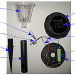
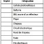

Séquence 34 Automatiser un Objet Technique.
Objectifs :
- Domaines
Pratiquer des démarches scientifiques et technologiques
Concevoir, créer, réaliser
S'approprier des outils et des méthodes
Pratiquer des langages
Mobiliser des outils numériques
Adopter un comportement éthique et responsable
Se situer dans l'espace et dans le temps
- Compétences
CT 1.1 CT 1.2 CT 1.3 CT 1.4 CS 1.5 CS 1.6 CS 1.7 CS 1.8 CT 2.1 CT 2.2 CT 2.3 CT 2.4 CT 2.5 CT 2.6 CT 2.7 CT 3.1 CT 3.2 CT 3.3 CT 4.1 CT 4.2 CT 5.1 CT 5.2 CT 5.3 CT 5.4 CT 5.5 CS 5.6 CS 5.7 CT 6.1 CT 6.2 CT 6.3 CT 7.1 CT 7.2
- Connaissances
CT 1.1 CT 1.2 CT 1.3 CT 1.4 CS 1.5 CS 1.6 CS 1.7 CS 1.8 CT 2.1 CT 2.2 CT 2.3 CT 2.4 CT 2.5 CT 2.6 CT 2.7 CT 3.1 CT 3.2 CT 3.3 CT 4.1 CT 4.2 CT 5.1 CT 5.2 CT 5.3 CT 5.4 CT 5.5 CS 5.6 CS 5.7 CT 6.1 CT 6.2 CT 6.3 CT 7.1 CT 7.2
Objectifs et/ou compétences
- Écrire un programme dans lequel des actions sont déclenchées par des événements extérieurs
- Identifier les flux d'information sur un objet et décrire les transformations qui s'opèrent
Situation déclenchante
-
Problématique : Comment domotiser un Objet Technique ?
- Définition : Domotique : Ensemble des techniques visant à l'automatisation de certains aspects de l'habitat (éclairage automatique, gestion de l'énergie, etc.).
- Hypothèses :
- Question 1 : Avec quoi pouvons-nous récupérer une information ?
- Question 2 : Avec quoi pouvons-nous donner un ordre ou une information ?
Activité 1 : Lampe solaire.




2) Trier les capteurs et les actionneurs.
3) Donner leurs fonctions.
4) Tracer la chaine d'information et d'énergie.
Activité 2 :
1) Proposer un scénario domotique pour l'habitation conteneur à l'aide des exemples ci-dessous. (situation déclenchante, capteurs, actionneurs)
- le chauffage avec le thermostat connecté et les radiateurs connectés ;
- l'audio et vidéo avec le home cinéma, la connexion de la musique, des téléviseurs, etc. ;
- le jardin avec la tondeuse, les pots de fleurs, l'arrosage de la pelouse, le barbecue, les éclairages, le potager connecté, etc. ;
- tous vos ouvrants : motorisation des volets, portails, porte de garage, etc. ;
- la salle de bain avec les toilettes, douches, brosses à dents, miroirs, chauffages, eau, etc. ;
- la piscine avec la gestion de l'eau, du chauffage, du nettoyage, etc.